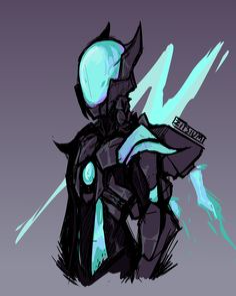
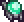
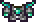
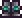
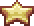
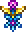
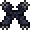
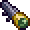
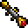
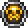

Classe de Atirador
A classe de ranger em Terraria, no endgame, se destaca pelo foco em ataques à distância, utilizando arcos, bestas e armas de projéteis. Os rangers possuem uma variedade de armas de longo alcance, usam acessórios para aumentar dano e precisão, e podem equipar armaduras especializadas. Estratégias incluem o uso de munição específica e dispositivos táticos, sendo eficazes contra chefes e eventos à distância. Versáteis em ambientes abertos, os rangers são uma classe dinâmica que requer escolha estratégica de equipamentos para o sucesso no final do jogo.

Elmo de Vortice

Peitoral de Vortice

Calças de Vortice

Vortex Armor

S.D.M.G

Celestial Starboard

Soaring Insignia

Master Ninja Gear

Recon Scope

Sniper Scope

Destroyer Emblem